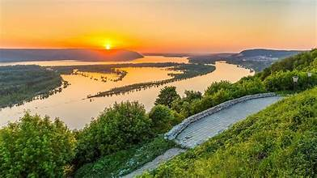
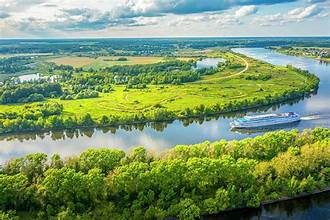
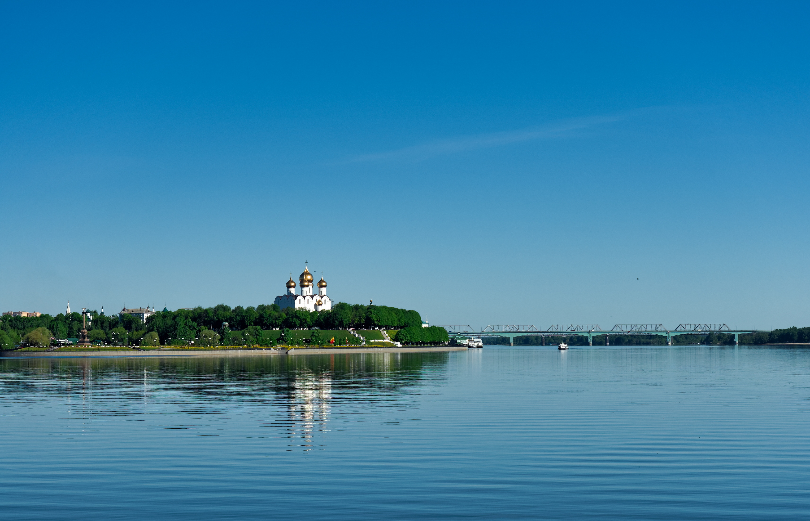
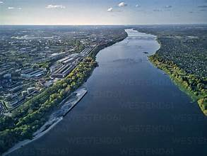
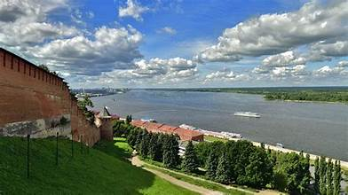

The Volga River is Europe's longest river, stretching about 3,530 km through western Russia and emptying into the Caspian Sea. Known as "Mother Volga" in Russian culture, it has been the lifeblood of Russian civilization for centuries, supporting trade, agriculture, and settlement across the country's heartland.
Rising in the Valdai Hills northwest of Moscow, the Volga flows through a series of large reservoirs before reaching Astrakhan and the Caspian delta. It drains about 1.35 million square kilometers and passes through major cities including Tver, Yaroslavl, Nizhny Novgorod, Kazan, Samara, Saratov, and Volgograd, connecting the heart of Russia from north to south.
The Volga has inspired countless works of Russian art, literature, and music. It served as the main artery for trade routes connecting Russia to Persia and the Byzantine Empire. The river was a stage for pivotal historical events, including the peasant uprisings of Stenka Razin and the decisive Battle of Stalingrad during World War II, which turned the tide against Nazi Germany.
Today the Volga is a premier destination for river cruises, fishing, and water sports. Multi-day cruise ships sail between Moscow and Astrakhan, stopping at historic riverside towns and monasteries. The river's banks offer sandy beaches, nature reserves, and charming villages that give visitors a glimpse into authentic Russian countryside life.


